PLANT EVOLUTIONARY BIOLOGIST
Sushil Dahal, Ph.D.
Department of Biological Sciences
Mississippi State University
Phylogenomics · Plant Evolution · Biogeography · Biodiversity · Bioinformatics
PLANT EVOLUTIONARY BIOLOGIST
Mississippi State University
Phylogenomics · Plant Evolution · Biogeography · Biodiversity · Bioinformatics
I recently earned my Ph.D. in Biological Sciences from Mississippi State University, where I developed expertise in genomics, bioinformatics, molecular biology, biodiversity research, and scientific project management.
My research integrates genomic and computational approaches to understand plant evolution, species diversification, historical biogeography, and ecological processes. I am particularly interested in connecting genomic variation with evolutionary and environmental patterns across plant lineages.
I aim to apply these interdisciplinary skills to collaborative research that combines field biology, genomics, bioinformatics, and quantitative approaches to address fundamental questions in evolutionary biology and biodiversity.
Genome-scale approaches to reconstruct evolutionary relationships and investigate species boundaries.
Understanding the processes that generate and maintain plant diversity.
Exploring how geography, climate, and environmental change shape lineage diversification.
Developing reproducible computational approaches for genomic and biodiversity research.

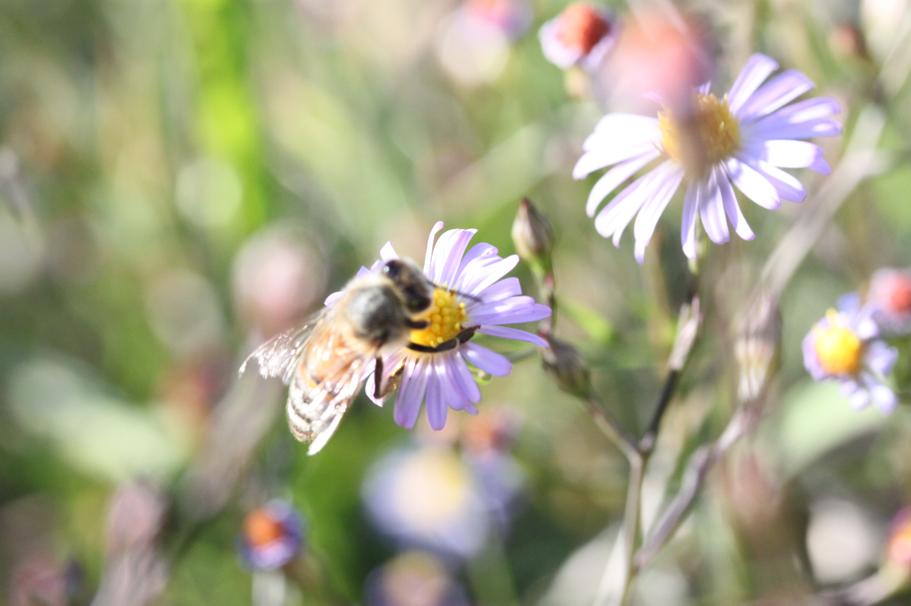
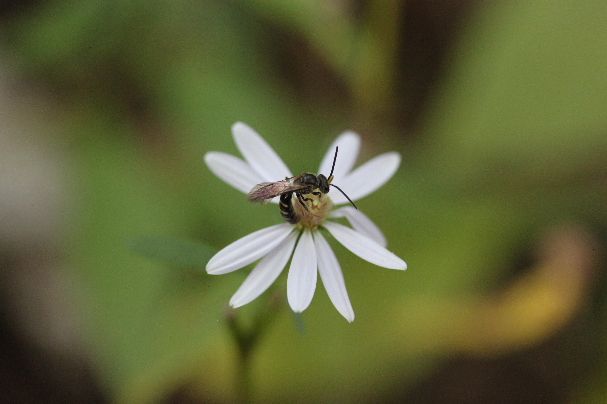
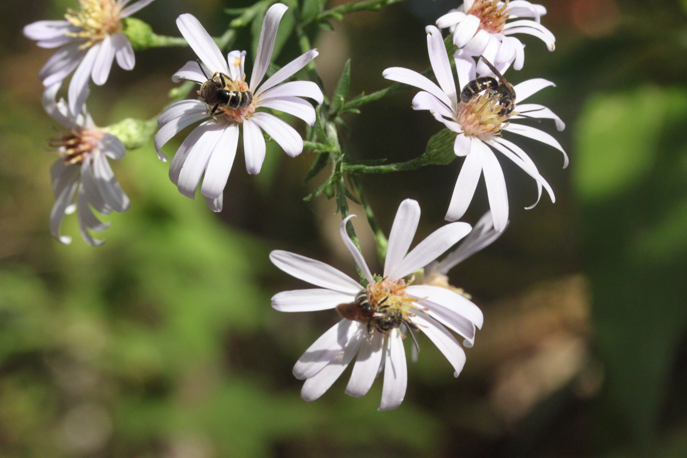
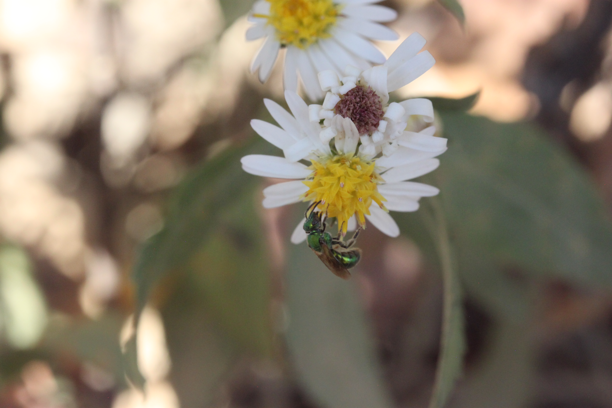
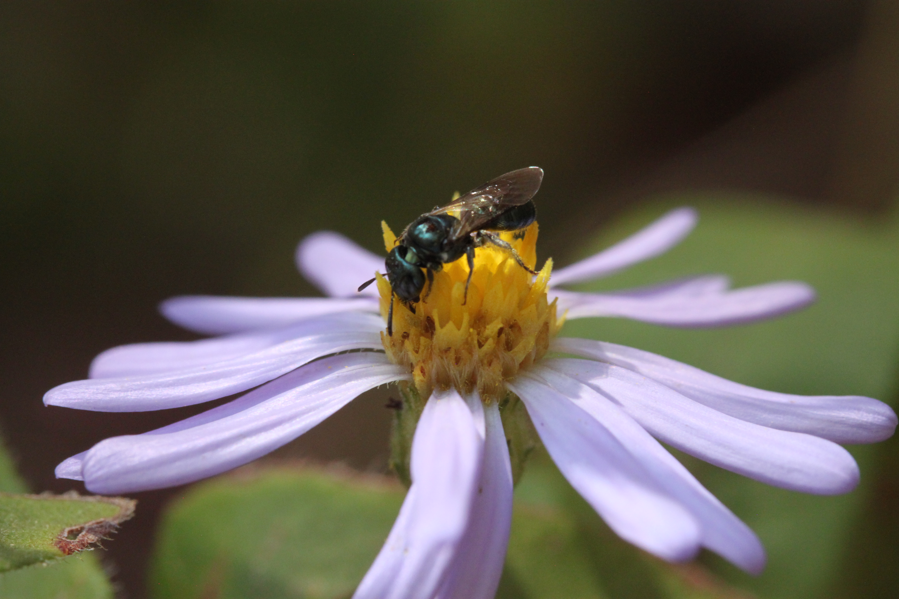
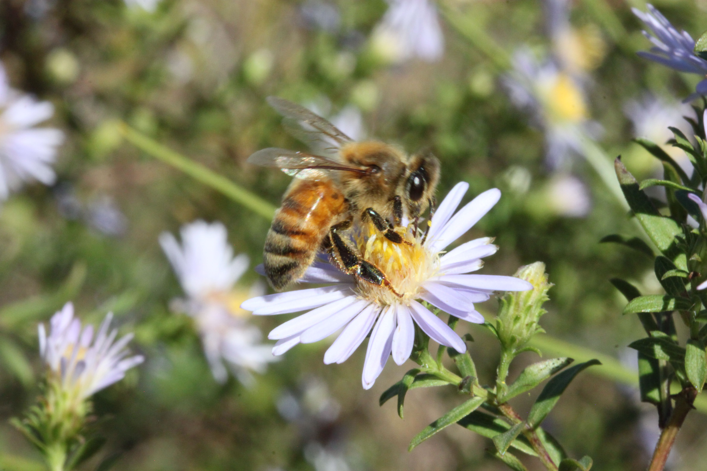
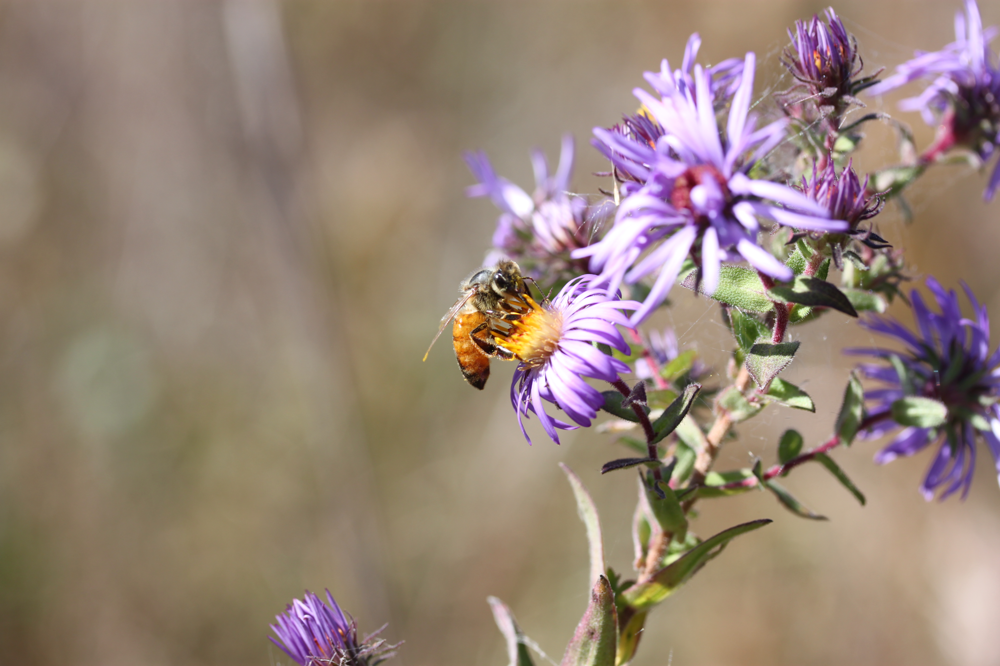
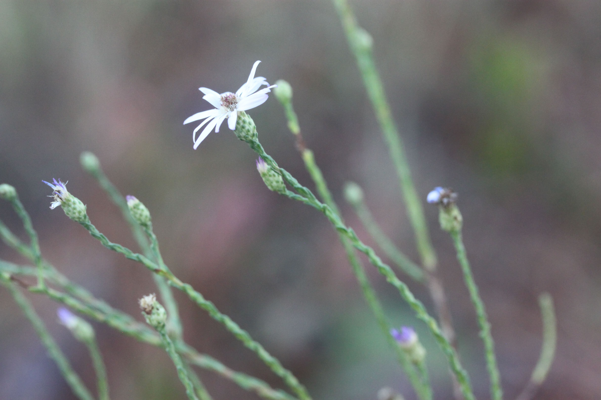
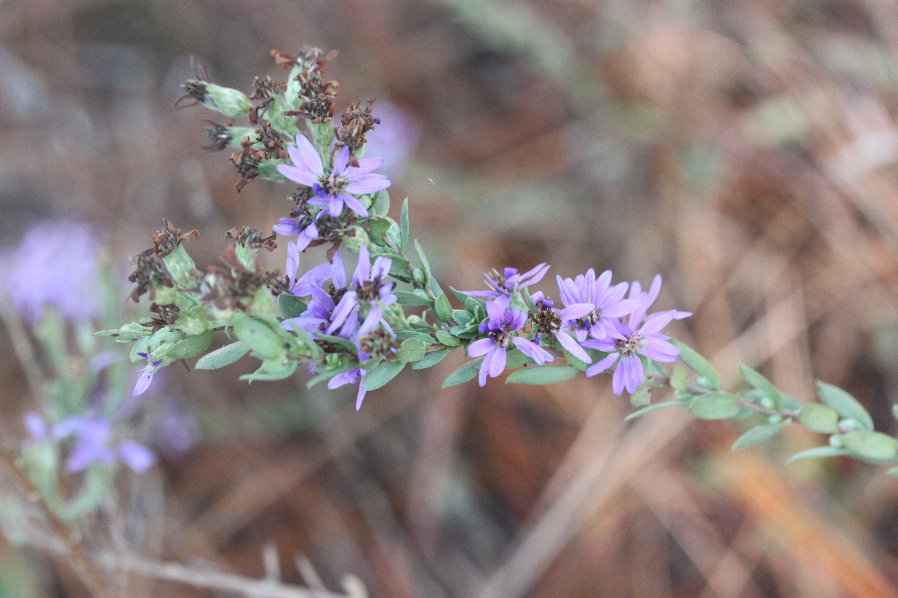
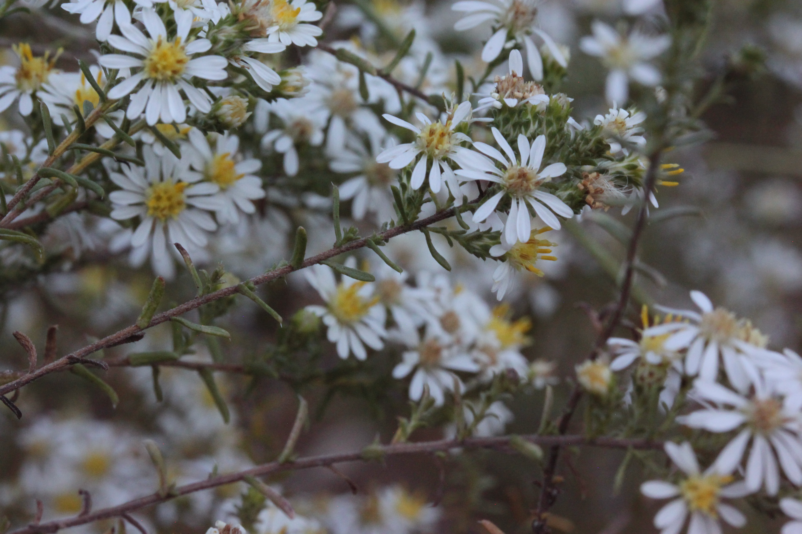
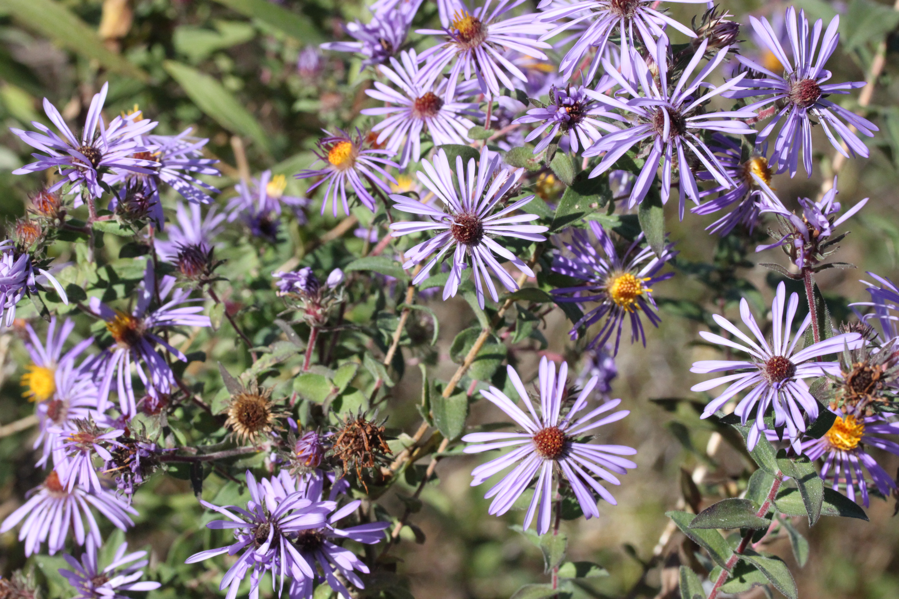
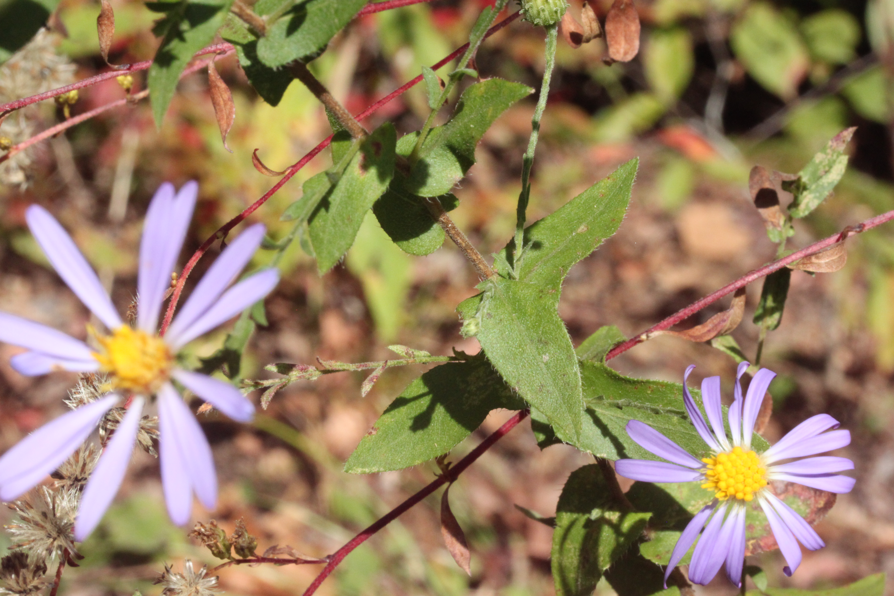
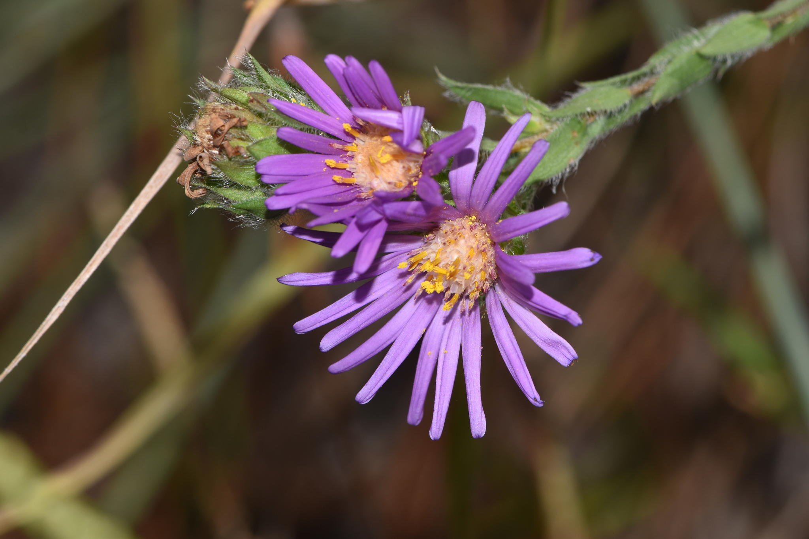